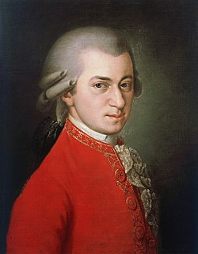

생애
어릴 때부터 여러 대도시와 궁정에서 연주를 보인 모차르트는 잘츠부르크에 머물며 궁정음악가로 활동하였었으나 그의 자유분방한 성격은 궁정과 여러 갈등을 일으켰고, 결국 대주교와의 불화를 계기로 1781년 빈으로 떠나 이후 죽을 때까지 이곳에 머무른다. 그곳에서 콘스탄체라는 여인과 사랑에 빠진 모차르트는 가족의 반대에도 불구하고 1782년 결혼을 성사시켰다.
|  |
| 1770년대 초상화 |
어릴 때부터 여러 대도시와 궁정에서 연주를 보인 모차르트는 잘츠부르크에 머물며 궁정음악가로 활동하였었으나 그의 자유분방한 성격은 궁정과 여러 갈등을 일으켰고, 결국 대주교와의 불화를 계기로 1781년 빈으로 떠나 이후 죽을 때까지 이곳에 머무른다. 그곳에서 콘스탄체라는 여인과 사랑에 빠진 모차르트는 가족의 반대에도 불구하고 1782년 결혼을 성사시켰다.
볼프강 아마데우스 모차르트는 1791년 12월 5일 오전 0시 55분경에 죽었다.
볼프강 아마데우스 모차르트는 여러 장르의 많은 음악 작품을 남겼다. 그의 많은 작품 가운데 특히 오페라, 피아노 협주곡, 교향곡, 그리고 현악 사중주와 현악 오중주 작품들이 유명하다. 모차르트는 또 피아노 솔로와, 여러 형태의 실내악, 미사곡 및 여러 종교 음악, 무곡들, 디베르티멘토 등도 작곡했다.